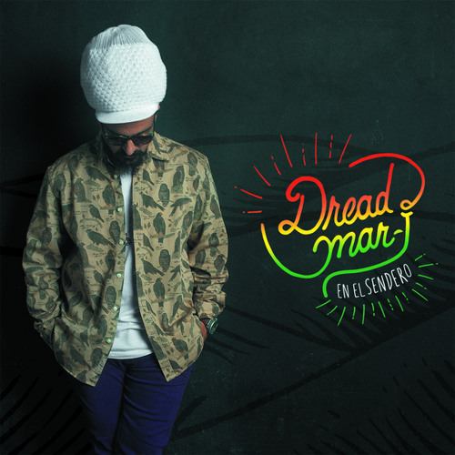

El 3 de febrero de 2015 estrena el video de "Laberintos". En julio sale el single "¿Qué Hago Yo?". El 12 de septiembre realiza un show multitudinario en El Planetario, en Palermo, Buenos Aires, festejando 10 años de carrera. Los asistentes pagan su entrada con donaciones (alimentos y otras). Allí se registra el concierto para lanzar un CD+DVD en 2016.
